StoreFront Basic Configuration
Navigation
This article applies to StoreFront 3.0.9000 and older. For newer versions, see the newer article.
- Change Log
- Installation / Upgrade to 3.0.9000
- Rename Default Store
- Edit HOSTS File to resolve Gateway and StoreFront FQDNs
- SSL Certificate on StoreFront servers
- SSL Encryption of Delivery Controllers
- StoreFront Base URL
- Authentication Configuration
- Remove Citrix Online Icons
- Receiver for HTML5 - Enable and Upgrade
- Receiver for Web - Timeout
- Receiver for Web - Pass-through Authentication
- Unified Receiver Experience
- Customize Receiver Appearance
- Default Tab
- Propagate Changes to other StoreFront servers in Server Group
- Default Web Page in IIS to redirect to Receiver for Web
- Receiver Deployment:
- Auto-favorite Published Apps
:idea: = Recently Updated
Change Log
- 2020 Nov 20 - updated article for StoreFront 3.0.9000
- 2020 Sep 8 - updated article for StoreFront 3.0.8001 to fix a security vulnerability
- 2019 Aug 21 - updated article for StoreFront 3.0.8000 to fix a security vulnerability
- 2019 Feb 8 - updated article for StoreFront 3.0.7000
- 2018 Sep 18 - updated article for StoreFront 3.0.6000
Installation / Upgrade
StoreFront Versions - The following StoreFront versions have very similar configurations:
- XenApp/XenDesktop 7.6.9000 (LTSR CU9) comes with StoreFront 3.0.9000.
- StoreFront 3.0.8001. - fixes a security vulnerability
- XenApp/XenDesktop 7.6.8000 (LTSR CU8) comes with StoreFront 3.0.8000. - 3.0.8000 was released early to fix a security vulnerability
- XenApp/XenDesktop 7.6.7000 (LTSR CU7) comes with StoreFront 3.0.7000.
- XenApp/XenDesktop 7.6.6000 (LTSR CU6) comes with StoreFront 3.0.6000.
- XenApp/XenDesktop 7.6.5000 (LTSR CU5) comes with StoreFront 3.0.5000.
- XenApp/XenDesktop 7.6.4000 (LTSR CU4) comes with StoreFront 3.0.4000.
- XenApp/XenDesktop 7.6.3000 (LTSR CU3) comes with StoreFront 3.0.3000.
- XenApp/XenDesktop 7.6.2000 (LTSR CU2) comes with StoreFront 3.0.2000.
- XenApp/XenDesktop 7.6.1000 (LTSR CU1) comes with StoreFront 3.0.1000.
- XenApp/XenDesktop 7.7 ISO comes with StoreFront 3.0.1. You can upgrade it from the 7.6 LTSR CU3 media.
- The XenApp/XenDesktop 7.6.0 ISO comes with StoreFront 2.6. If you installed StoreFront on your Delivery Controllers, then it is version 2.6, and you can upgrade it to 3.0.8000.
Server Selection - StoreFront can be installed directly on your Delivery Controllers. When installing Delivery Controller, simply leave the box checked to install StoreFront. If you let Delivery Controller install StoreFront, it will create a default store named /Citrix/Store. See below to rename this store.
Or you can install StoreFront 3.0.9000 on separate servers. You can even install StoreFront on your existing Web Interface servers (make sure Web Interface is installed first).
Citrix Blog Post StoreFront 3.0 Scalability recommends StoreFront servers to be sized with 4 vCPU and 8 GB RAM.
After installation, NT SERVICE\CitrixConfigurationReplication and NT SERVICE\CitrixClusterService must remain in the Administrators group on both StoreFront servers or propagation will fail.
Install / Upgrade StoreFront 3.0.9000
Download StoreFront 3.0.9000.
- For new installs, there's no need to install prerequisites (e.g. IIS) since the StoreFront installer will do it for you.
- If upgrading from older StoreFront:
- Other Users - Use Task Manager > Users tab to logoff any other user currently logged into the machine.

- Close all MMC and PowerShell consoles.
- Stop the World Wide Web Publishing Service.
- Stop all StoreFront services.
- Other Users - Use Task Manager > Users tab to logoff any other user currently logged into the machine.
- Go to the downloaded and extracted RcvrSF_3_0_8001 folder and run CitrixStoreFront-x64.exe.
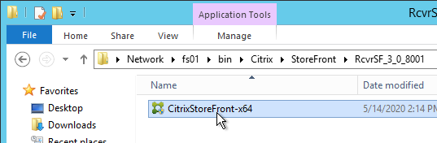
- In the License Agreement page, check the box next to I accept the terms, and click Next.
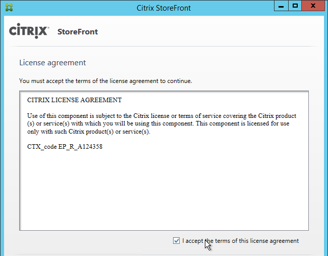
- In the Review prerequisites page, click Next.
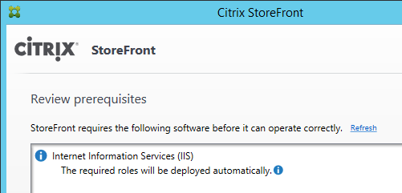
- In the Ready to install page, click Install.
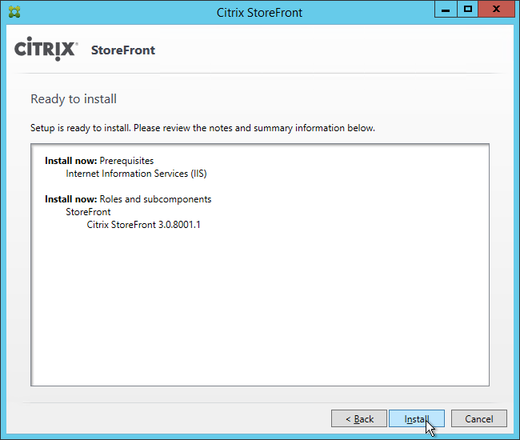
- In the Successfully installed StoreFront page, click Finish.
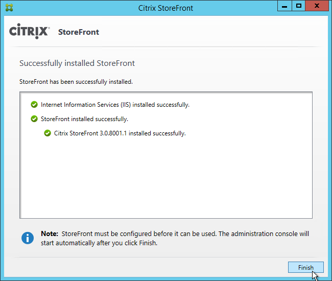
- If this is a new install, skip to the next section (Initial Configuration).
- After upgrading, in StoreFront Console, go to Receiver for Web and Disable Classic Receiver Experience.
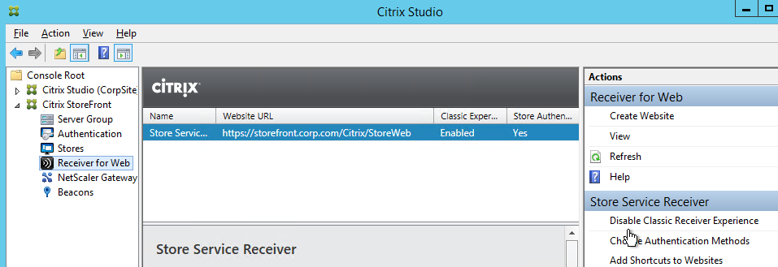
- Click Disable.
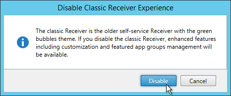
- Go to Stores and on the right, click Set Unified Experience as Default.
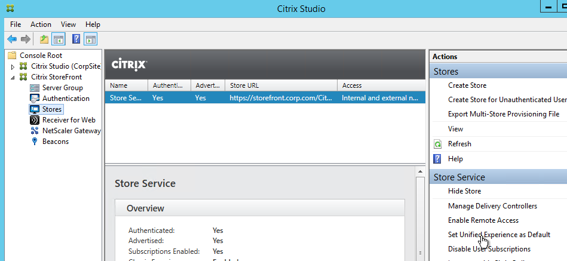
- Check the box next to Set the unified Receiver experience as the default for this store and click OK.
- Go back to Receiver for Web and use the Configure Receiver Appearance and Manage Featured App Groups links to customize the webpage.
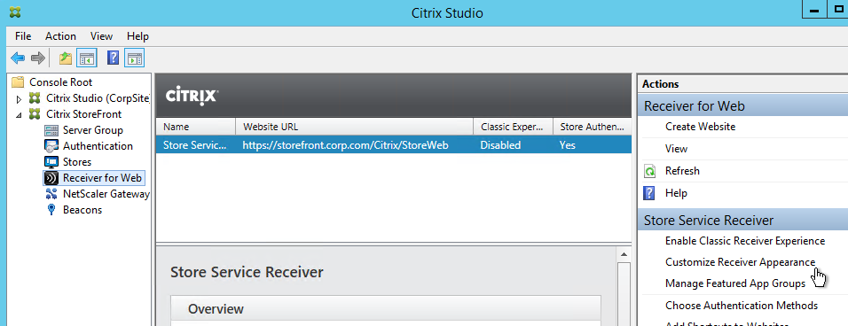
Initial Configuration
If this is a new install of StoreFront, do the following:
- In PowerShell, run Set-ExecutionPolicy Unrestricted.
- The management console should launch automatically. If not, launch Citrix StoreFront from the Start Menu.
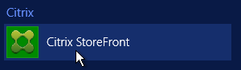
- In the middle, click Create a new deployment.
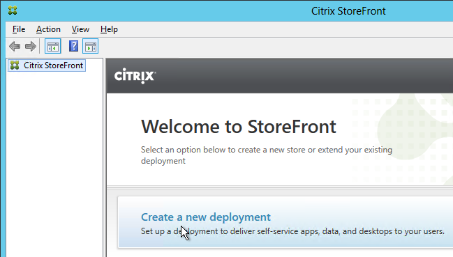
- In the Base URL page, if you installed an SSL certificate on the StoreFront server, then the Hostname should already be filled in. If SSL is not configured yet then you can leave it set to the server name and change it later once you setup SSL and load balancing. Click Next.
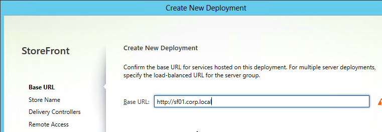
- In the Store Name page, enter a name for the store and click Next. The Store name entered here is part of the URL path. And users see this name in their local Receiver Accounts list.
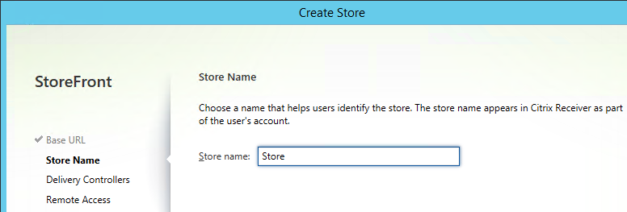
- In the Delivery Controllers page, you can one set of Delivery Controllers per XenApp farm or XenDesktop site. Click Add.
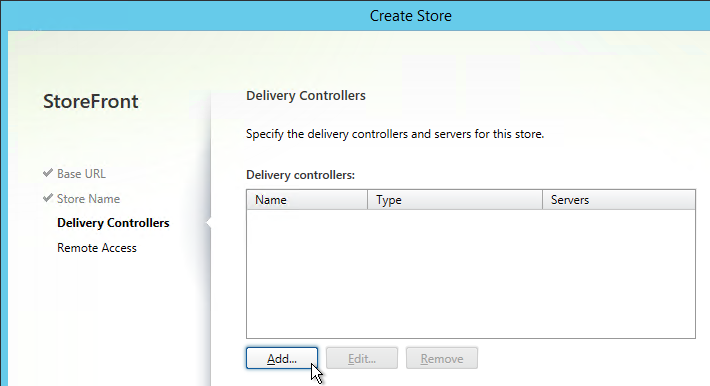
- Change the Type to XenDesktop.
- Enter a descriptive name for the XenApp/XenDesktop 7.6 or newer site/farm. This name does not need to match the actual site/farm name. And users don't see this name.
- Add the two Controllers. Change the Transport Type to HTTP. Click OK. It's also possible to set the Transport type to HTTPS if certificates are installed on your Delivery Controllers.
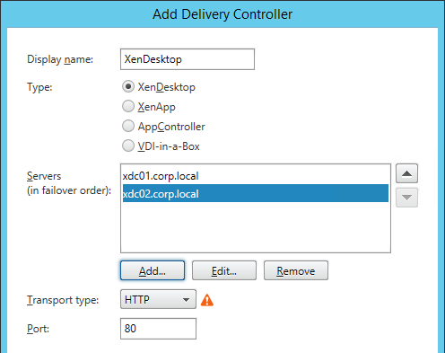
- If you have multiple XenDesktop sites/farms feel free to add them now. Or you can add older XenApp farms. Click Next when done.
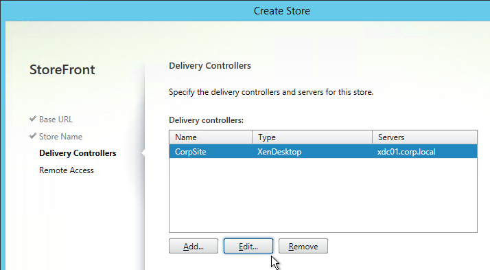
- In the Remote Access page, select None and click Create. You can configure StoreFront to use NetScaler Gateway later.
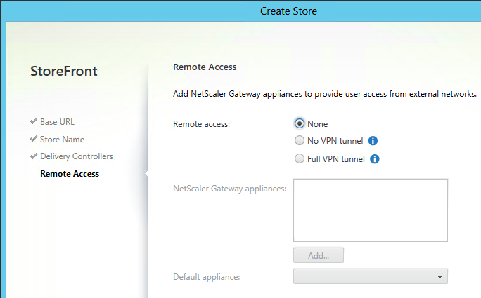
- In the Created Successfully page, click Finish.
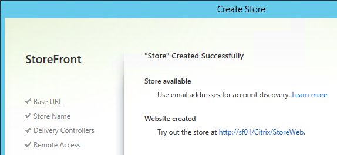
Second StoreFront Server
After installation of the second server, NT SERVICE\CitrixConfigurationReplication and NT SERVICE\CitrixClusterService must remain in the Administrators group on both StoreFront servers or propagation will fail.
- Install StoreFront 3.0.9000 on the second server.
- On the 2nd server, create/import the SSL certificate and bind it to the Default Web Site.
- Login to the first StoreFront server. In the StoreFront management console, right-click Server Group, and click Add Server.
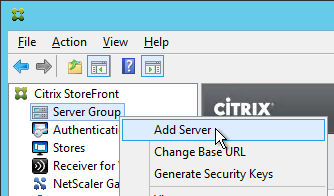
- Copy the Authorization code.
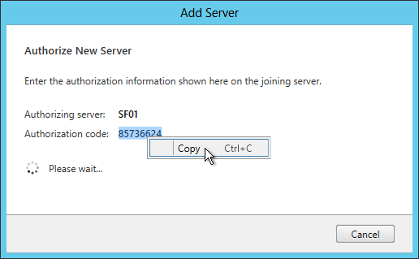
- Login to the second StoreFront server and launch the StoreFront Console. In the middle, click Join existing server group.
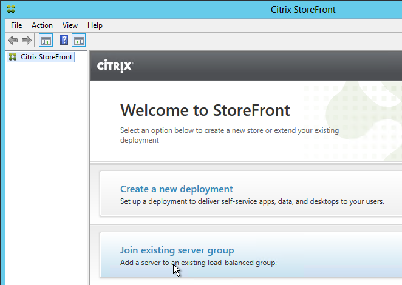
- In the Join Server Group page, enter the name of the first StoreFront server and enter the Authorization code copied earlier. Click Join.
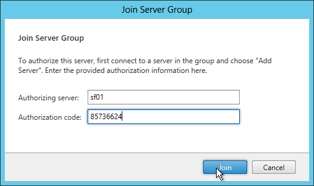
- Then click OK.
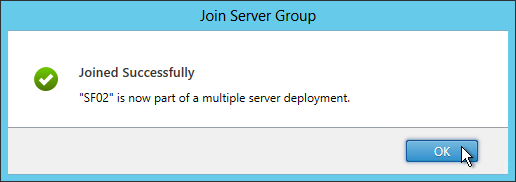
- Go back to the first server. Click OK.
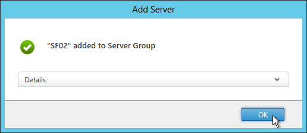
- All changes made on one StoreFront server must be propagated to the other StoreFront server. When changing StoreFront web.config files, change them on one StoreFront server use the StoreFront Console to Propagate Changes to the other StoreFront servers.
Store Name – Rename
When you install XenDesktop Delivery Controller, you are given the option of installing StoreFront on the same server. If you let the Delivery Controller installer also install StoreFront then the StoreFront on the Controller will have a default store name of /Citrix/Store. If you don’t like the default Store Name then you will need to remove the store and re-add it.
- In the StoreFront console, on the left click Stores.
- Highlight the store and on the bottom right click Remove Store.
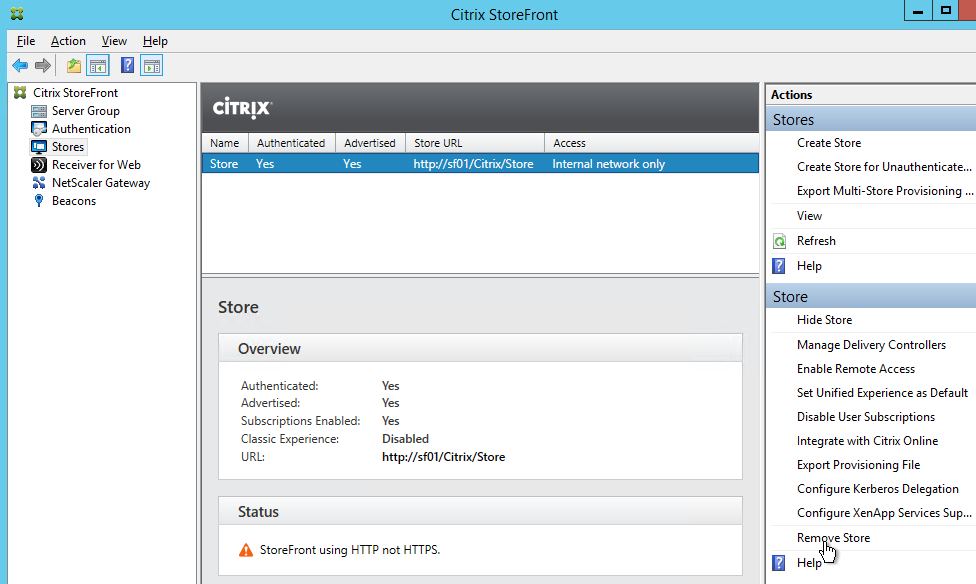
- Click Remove.
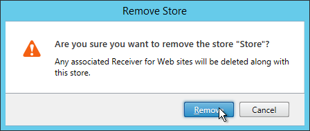
- On the left, right-click Stores and click Create Store.
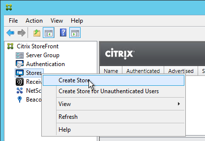
- In the Store Name page, enter a name. This name becomes part of the path (/Citrix/StoreName) and is displayed in Receiver. Click Next.
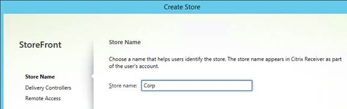
- In the Delivery Controllers page, add farms and click Next.
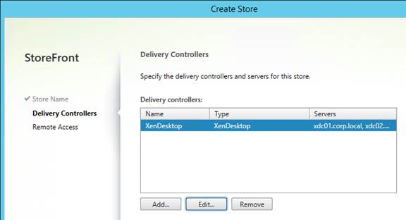
- In the Remote Access page, leave it set to None and click Create.
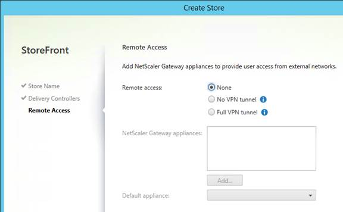
- In the Created Successfully page, click Finish.
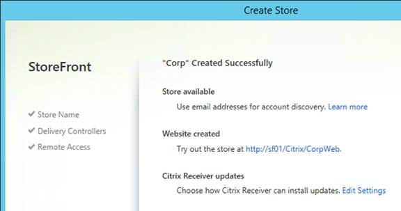
HOSTS File
StoreFront 3.0 is smart enough to do a loopback connection to the local StoreFront server instead of sending traffic through the load balancer. For more information see No More Editing of Hosts File at Citrix Blog Post What’s New in StoreFront 3.0.
However, if you have StoreFront servers in multiple datacenters then you are probably using GSLB-enabled DNS names and StoreFront needs to resolve these names to VIPs in the local datacenter. Edit the HOSTS file (C:\Windows\System32\Drivers\Etc\HOSTS) on each StoreFront server with the following entries:
- StoreFront Load Balancing FQDN (e.g. Citrix.corp.com) = Load Balancing VIP in the local datacenter.
- NetScaler Gateway Callback FQDN (e.g. CitrixCB.corp.com) = NetScaler Gateway VIP in the local datacenter.
SSL Certificate
StoreFront requires SSL. You will save yourself much heartache if you install valid, trusted certificates. There are two options for StoreFront SSL:
- SSL Offload: Use NetScaler to do SSL Offload and load balancing. In this scenario NetScaler does SSL encryption on the client side but uses clear-text HTTP on the StoreFront side and thus there is no need for certificates on the StoreFront servers. The SSL certificate on the NetScaler must match the DNS name that resolves to the load balancing VIP for StoreFront.
- SSL End-to-end: In this scenario, NetScaler does encryption on the client-side but also re-encrypts before sending traffic to the StoreFront servers. This requires certificates on the StoreFront servers.
NetScaler usually does not verify server-side certificates so it doesn't matter what name is in the cert that is installed on the StoreFront servers. However, some other load balancers do verify the cert and thus the cert on the StoreFront servers should match the FQDN of the StoreFront server.
If StoreFront is installed on your Delivery Controllers then both functions share the same IIS website and the same SSL certificate. If you want to enable SSL for the Delivery Controller (XML) connection, then the cert name on each server must match the FQDN of the Delivery Controller. One option is to create an SSL certificate with the following Subject Alternative Names: the StoreFront load balanced DNS name and each of the Delivery Controller FQDNs. Then import this one certificate on all StoreFront/Delivery Controllers servers and load balancers. Or a wildcard certificate could match all of these names.
In any case, be aware of the Subject Alternative Name requirements for email-based discovery in Citrix Receiver. Email discovery in Citrix Receiver requires the certificate to not only match the StoreFront load balanced DNS name but the certificate must also match discoverReceiver.email.suffix. Usually the only option to match both names is with Subject Alternative Names. If you have multiple email suffixes then you will need multiple Subject Alternative Names, each beginning with discoverReceiver.email.suffix. If you configure Subject Alternative Names, don't forget to add the load balanced name as one of the Subject Alternative Names.
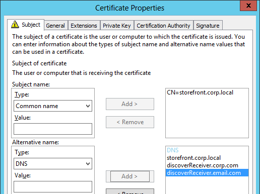
When you view a Subject Alternative Name certificate, on the Details tab, click Subject Alternative Name to verify that all names are listed, including the DNS name that resolves to the load balancing VIP. 
When attempting email discovery in Receiver, if the certificate does not match discoverReceiver.email.suffix then users will see this message:
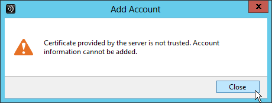
- The Certificates MMC snap-in can be used to create an internal certificate signed by a Microsoft Certificate Authority. The MMC method allows you to specify Subject Alternative Names.
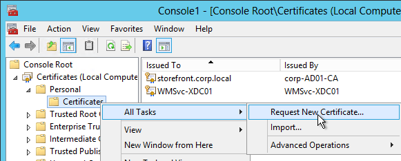
- Or use the Server Certificates feature in IIS Manager to create or import a certificate.
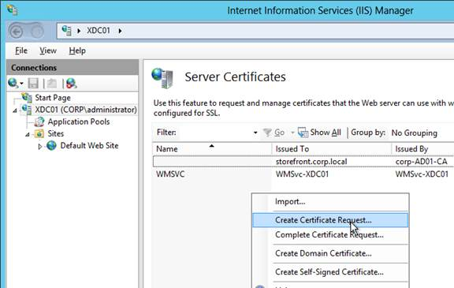
- After the certificate has been created/imported on the StoreFront Server, in IIS Manager, right-click the Default Web Site and click Edit Bindings.
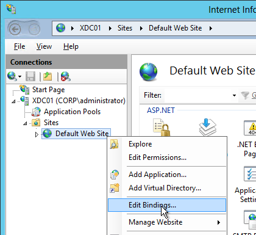
- Click Add.
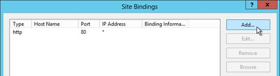
- Change the Type to https and select the SSL certificate. Click OK and then click Close.
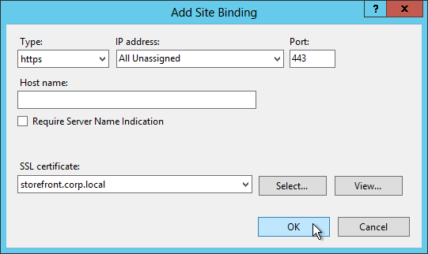
- Next step: change the Base URL inside StoreFront Console.
Delivery Controllers – SSL
Delivery Controllers can be SSL enabled by using one of two methods:
- If IIS is installed on the Delivery Controller, simply install/create a certificate, and bind it to the Default Web Site.
- If IIS is not installed on the Delivery Controller, then you need to run a command line program as described at CTX200415 Secure XML traffic between StoreFront and Delivery Controller 7.x. Or use Ray Kareer's script at Binding your SSL Server Certificate to the Citrix Broker Service at CUGC.
Once SSL certificates are installed on the Delivery Controller servers, then you can configure the Store to use SSL when communicating with the Delivery Controllers.
- In the StoreFront Console, on the left click Stores.
- On the bottom-right, click Manage Delivery Controllers.
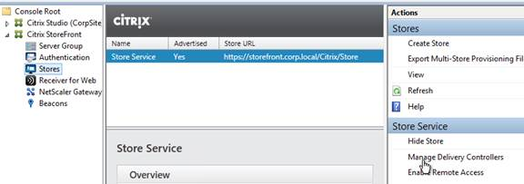
- Highlight the deployment and click Edit.
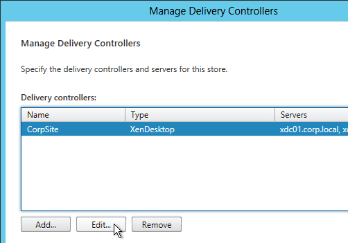
- Change the Transport type to HTTPS.
- Make sure the Delivery Controller servers are entered using their FQDNs. These FQDNs must match the certificates installed on those servers.
- Click OK twice.
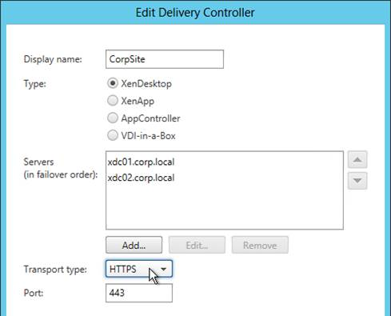
Base URL – Change
The StoreFront Base URL should point to a URL with a FQDN that resolves to a load balancing VIP that load balances the StoreFront servers. Receiver uses this Base URL to connect to StoreFront. If remote, Receiver will first connect to NetScaler Gateway and then use Gateway to proxy a connection to the Base URL.
If you are not following the Single FQDN procedure then the FQDN used for load balancing of StoreFront (Base URL) must be different than the FQDN used for NetScaler Gateway.
The StoreFront Base URL must be https. Receivers will not accept clear-text http URLs. This is true even for remote connections that are proxied through NetScaler Gateway.
- Configure load balancing of the StoreFront servers, including SSL certificate.
- In the Citrix StoreFront console, right-click Server Group and click Change Base URL.
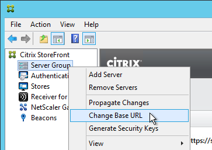
- Enter the new Base URL in https://citrix.corp.com format. This must be https. Receivers will not accept http URLs.
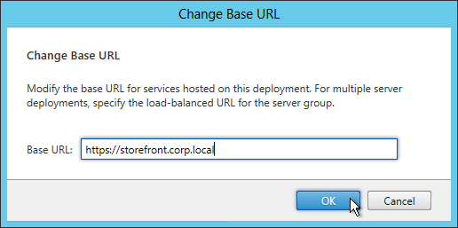
-
If the Base URL is https but you don’t have certificates installed on your StoreFront servers (aka SSL Offload) then you’ll need to run the following commands on the StoreFront servers. See No More Editing of Hosts File at Citrix Blog Post What’s New in StoreFront 3.0.
Authentication Configuration
If StoreFront is not in the same domain (or trusted domain) as the users, then you can configure StoreFront 3.0 to push authentication to the Delivery Controllers. See XML service-based authentication at docs.citrix.com. Note: StoreFront must still be a member of domain but the particular domain doesn’t matter.
- In the Citrix StoreFront console, on the left, right-click Authentication and click Add/Remove Methods.
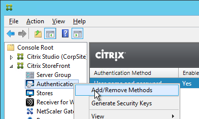
- Check the boxes next to Domain pass-through and Pass-through from NetScaler Gateway. Click OK.
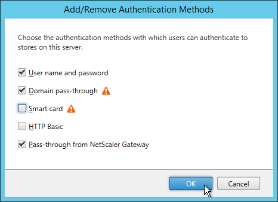
-
If you intend to enable pass-through authentication from Receiver Self-Service or from Receiver for Web, run the command
Set-BrokerSite -TrustRequestsSentToTheXmlServicePort $Truefrom a Windows PowerShell command prompt on a Controller.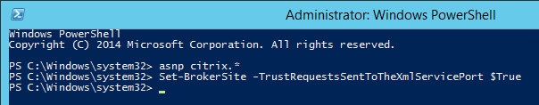
In XenApp 6.5, this is a Citrix Policy > Computer > Trust XML Requests.
-
With User name and password highlighted in the middle, click Configure Trusted Domains on the bottom-right.
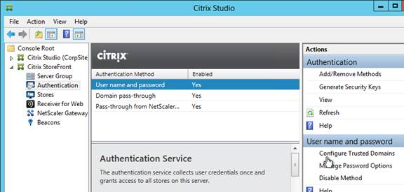
- Select Trusted domains only, click Add, and enter the domain names (NetBIOS and DNS). The DNS suffix is needed if doing userPrincipalName authentication.
- Select one of the domains as the default.
- If desired, check the box next to Show domains list in logon page. Click OK.
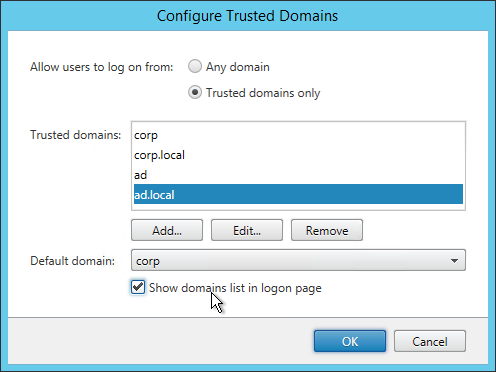
- With User name and password highlighted in the middle, click Manage Password Options in the bottom right.
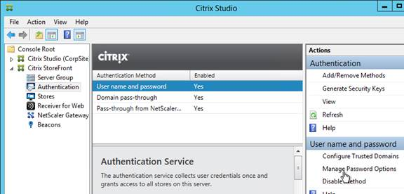
- Make your selection and click OK.
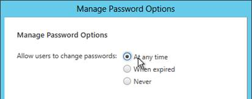
- From Feng Huang at discussions.citrix.com: you can change the password expiration warning period by editing /Citrix/Authentication/web.config. Set showPasswordExpiryWarning to Custom and set passwordExpiryWarningPeriod to your desired number of days.
- Be careful with password changes. Any time somebody changes their password through StoreFront, a profile will be created for that user on the StoreFront server. Use a tool like delprof2.exe to periodically delete these local profiles.
Citrix Online Integration
- StoreFront might be configured to add the Citrix Online icons to Receiver. To remove them, on the left click Stores and on the right click Integrate with Citrix Online.
- Uncheck all three boxes and click OK.
Receiver for HTML5 - Enable and Upgrade
By default, Receiver for HTML5 is not enabled.
- In the StoreFront console, on the left, click Receiver for Web.
- On the bottom right, click Deploy Citrix Receiver.
- Change the option to Use Receiver for HTML5 if local install fails, and then click OK.
- To see the installed version of HTML5 Receiver, click the Receiver for Web node on the left. The version is displayed in the middle pane, in the bottom half.
- Download the latest Receiver for HTML5 and install it on one of the StoreFront servers. It installs silently. When you propagate changes, the Receiver for HTML5 should be copied to the other server.
- Customer Experience Improvement Program (CEIP) is enabled by default. To disable it, edit the file "C:\Program Files\Citrix\Receiver StoreFront\HTML5Client\configuration.js".

- Search for the ceip section and change it to false.

- HTML5 Receiver 2.6.4 adds an experimental multimonitor feature. You can enable it by setting multiMonitorto true.
- HTML5 Receiver 2.6.4 improves PDF printing in Chrome and Firefox. Enable it by setting supportedBrowsersto true.

- HTML5 Receiver 2.6.2 has an experimental printing feature where in the remote app, after printing to the Citrix PDF printer, the second print dialog opens in the current tab instead of a different tab. To enable this feature, on the StoreFront server, edit C:\Program Files\Citrix\Receiver StoreFront\HTML5Client\configuration.js and set openWithinSession to true. Note: this setting changed in 2.6.4 and newer.
- When printing from HTML5 Receiver to the Citrix PDF Printer, the user must click Continue to show the PDF. You can get rid of this prompt in 2.5.1 and newer. In the configuration.js file, scroll down to the line containing printDialog and set it to true.


- From Configuring toolbar at Citrix Docs: The new toolbar can be disabled or customized by editing the file C:\Program Files\Citrix\Receiver StoreFront\HTML5Client\configuration.js.

- From Enhanced clipboard support at Citrix Docs: To enable enhanced clipboard support, on every VDA set the registry value HKEY_LOCAL_MACHINE\SYSTEM\CurrentControlSet\Control\Citrix\wfshell\Virtual Clipboard\Additional Formats\HTML Format\Name\="HTML Format". Create any missing registry keys. This applies to both virtual desktops and Remote Desktop Session Hosts.
- Citrix Blog Post Receiver for HTML5 and Chrome File Transfer Explained:
- How to use the toolbar to transfer files
- Citrix Policy settings to enable/disable file transfer
- VDA registry settings to control file transfer
- HTML5Client\Configuration.js settings for client-side configuration
- How to view HTML5Client log file
- In the StoreFront console, on the left, right-click Server Group, and click Propagate Changes.
- Optionally, install Citrix PDF Printer on the VDAs. The PDF printer is in the Additional Components section of the HTML5 Receiver download page. This PDF printer is only used with Receiver for HTML5, and not with regular Receiver.
- Note: as of Receiver for HTML 2.0, it's no longer necessary to install App Switcher on the VDAs.
- StoreFront can be configured to launch HTML5 applications in the same Receiver for Web tab instead of creating a new tab. See Configure Citrix Receiver for HTML5 use of browser tabs at Citrix Docs for more information.
Receiver for Web Timeout
- On the left, click Receiver for Web.
- On the right, click Set Session Timeout
- Set the timeout as desired and click OK.
- The session timeout in StoreFront 3.0 is not being reset correctly when a user launches an application. See Michael Bednarek’s code at discussions.citrix.com that fixes the problem.
- If you are using a NetScaler, you will need to change the Global Session Timeout located at NetScaler Gateway > Global Settings > Change Global Settings > Client Experience > Session Time-out (mins).
Receiver for Web Pass-through Authentication
If you enabled Pass-through auth in the Authentication node it does not enable it from Receiver for Web. If you enable it in Receiver for Web, additional configuration is required on the Receiver side to fully enable pass-through auth.
- On the left, click Receiver for Web
- On the right, click Choose Authentication Methods.
- If desired, check the box next to Domain pass-through. Click OK.
- If the StoreFront URL is in the browser’s Local Intranet zone then you’ll see a prompt to automatically Log On. This only appears once.
- If you try to launch an icon it will ask you to login to Windows. To fix this, you must also enable pass-through authentication on the client side (Receiver).
Unified Receiver Experience
If you did a clean install of StoreFront 3.0 or newer then the newer Receiver UI will already be enabled and you can skip this section.
If you upgraded from an older StoreFront then you can disable the Classic UI to enable the newer UI.
- On the left, click Receiver for Web.
- On the right, click Disable Classic Receiver Experience.
- Click Disable.
- On the left, click Stores. On the right, click Set Unified Experience as Default.
- Check the box next to Set the unified Receiver experience as the default for this store and click OK.
Customize Receiver Appearance
If the Unified Receiver appearance is enabled, you can go to Receiver for Web > Customize Receiver Appearance to change logos and colors. Additional customization can be performed using the SDK.
You can also Manage Featured App Groups.
These Featured App Groups are displayed at the top of the Apps > All page.

By default, Featured App Groups are displayed with continual horizontal scrolling. This is OK if you have several Featured App Groups but doesn’t look right if you only have one Featured App Group.

Michael Bednarek has posted some code at Citrix Discussions to disable the continuous horizontal scrolling. Also see CTX202415 StoreFront Featured Apps Group Appears More Than Once.

Additional StoreFront and Receiver customizations are available through the StoreFront APIs.
Default Tab
- By default, when a user logs in to StoreFront, the Favorites tab is selected. Users can go to other tabs to add icons to the list of Favorites.


- You can change the default tab to something other than Favorites by editing C:\inetpub\wwwroot\Citrix\StoreWeb\web.config in an elevated text editor.
- Search for defaultView or scroll to line 61. Change the defaultView to apps or desktops, or leave it set to the default of auto. Auto will select a tab in the following priority order depending on which tabs (views) are enabled: Favorites > Apps > Desktops.
- If you change it to default to the Apps view, then you might also want to default to the Categories view instead of the All view.

-
You can do this by adding the following code to C:\Inetpub\wwwroot\Citrix\StoreWeb\custom\script.js. More details at discussions.citrix.com.
CTXS.Extensions.afterDisplayHomeScreen = function (callback) { CTXS.ExtensionAPI.navigateToFolder('/'); }; CTXS.Extensions.onViewChange = function (viewName) { if (viewName == 'store') { window.setTimeout(function () { CTXS.ExtensionAPI.navigateToFolder('\\'); }, 0); } }; 6. Then when you login to StoreFront you’ll see Apps > Categories as the default view. This works in Receiver too.
6. Then when you login to StoreFront you’ll see Apps > Categories as the default view. This works in Receiver too.  7. To completely remove the Favorites tab, in the StoreFront Console, go to Stores > Disable User Subscriptions.
8. When publishing applications in Studio, specify a Category so the applications are organized into folders.
7. To completely remove the Favorites tab, in the StoreFront Console, go to Stores > Disable User Subscriptions.
8. When publishing applications in Studio, specify a Category so the applications are organized into folders.
Propagate Changes
Any time you make a change on one StoreFront server, you must propagate the changes to the other StoreFront server.
- In the StoreFront console, on the left, right-click Server Group and click Propagate Changes.
- You might see a message saying that you made changes on the wrong server.
- Click OK when asked to propagate changes.
- Click OK when done.
IIS Default Web Page
Citrix CTX133903 How to Make Storefront the Default Page within the IIS Site. To make a Storefront Web site the default page within the IIS site, complete the following procedure:
-
Open Notepad and paste the following text:
Note: Replace /Citrix/StoreWeb to the correct path to your Store’s Web site, if required. You can also put https://StoreFrontFQDN in the location field.
-
Select File > Save As and browse to the IIS folder, by default the C:\inetpub\wwwroot is the IIS folder.
- Select the Save as type to All types.
- Type a file name with an html extension, and select Save.
- Open IIS Manager.
- Select the SERVERNAME node (top-level) and double-click Default Document, as shown in the following screen shot:
- Select Add…,
- And enter the file name of the .html file provided in Step 4.
- Ensure the .html file is located at the top of the list, as shown in the following screen shot:
- Repeat these steps on every StoreFront server.
Deploy Citrix Receiver from StoreFront
If you performed a standalone install of StoreFront, then it is configured to tell users to pull Receivers from Citrix’s website. Follow this section to configure StoreFront to download Receivers directly from the StoreFront server.
Or if you installed StoreFront 2.6 using the XenApp/XenDesktop 7.6 autoselect.exe and later upgraded it to StoreFront 3.0.9000, then StoreFront will probably have local Receiver clients that need to be upgraded. Both procedures are covered in this section.
- Go to C:\Program Files\Citrix\Receiver StoreFront\Receiver Clients\. Create a Windows folder if it doesn’t exist.
- In the Windows folder, paste the downloaded Receiver 4.9.9002 LTSR for Windows, overwriting the existing file if one exists. Rename the file the CitrixReceiver.exe if it isn't already. Do this on both StoreFront servers.
- Go back up to the Receiver Clients folder and create a Mac folder if one doesn’t exist.
- Copy the downloaded Receiver for Mac 12.9.1 to C:\Program Files\Citrix\Receiver StoreFront\Receiver Clients\Mac. Overwrite the existing file if one exists. Rename the file to CitrixReceiver.dmg.
- Go to C:\inetpub\wwwroot\Citrix\StoreWeb and edit the file Web.config. If UAC is enabled you’ll need to run your text editor elevated.
- Scroll down to the pluginAssistant section (line 52). If desired, change upgradeAtLogin to true. This will enable StoreFront to check the installed version of Receiver and offer to upgrade.
- If the win32 and macOS paths point to downloadplugins.citrix.com, you can change the paths to a local folder so that the Receiver is downloaded directly from StoreFront instead of from Citrix.com. Simply change http://downloadplugins.citrix.com to clients. Also, change the file names so they match the ones on your StoreFront servers.
- Close and save the file.
- Propagate Changes to the other StoreFront servers.
- When users connect to Receiver for Web, they will be prompted to install or upgrade. Note: this only applies to Receiver for Web. Receiver Self-Service will not receive this prompt.

Auto-Favorite
To force a published application to be favorited (subscribed), use one of the following keywords in the published application description:
- KEYWORDS: Auto = the application is automatically subscribed. But users can remove the favorite.
- KEYWORDS: Mandatory = the application is automatically subscribed and users cannot remove the favorite.
With Mandatory applications there is no option to remove the application from Favorites.
Related Topics
StoreFront Subscriptions - disable, control, replicate, etc.
StoreFront Tweaks - customize RFWeb, SSON for PNAgent, etc.